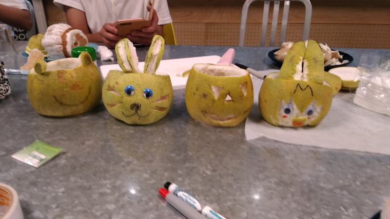
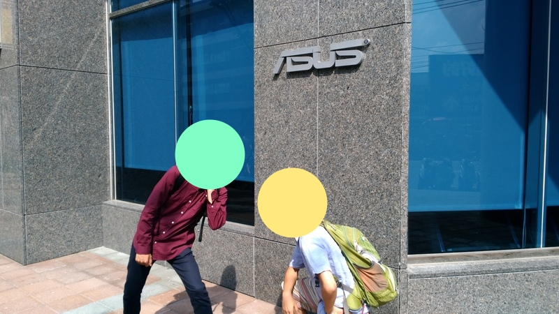
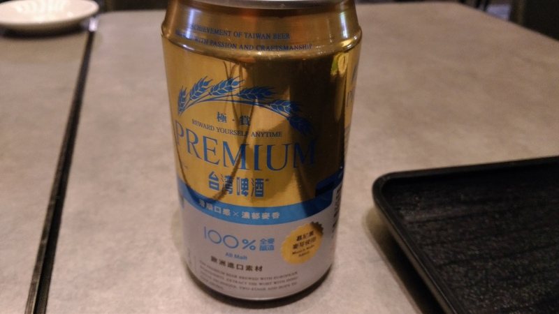

はじめに
この記事はtaniho Advent Calendar 2017の22日目の記事です．
今日は2017人工智慧單晶片電腦鼠曁機器人國内及國際邀請賽に付き添ってきた話をします．この記事は大量の写真が含まれているのでご注意ください．
一緒に行った方々のブログはこちらです．
- null
出発(21日)
2017年9月21日の夜，ここは成田空港．これからFNDとの2人旅行が始まります．
FNDがゴールドカードを持っていたという驚愕の事実が発覚したのでラウンジでビールを飲みに行きました．なお時刻は閉店15分前．
JALを使う金銭的余裕がなかった僕達は毎度のごとくVanilla Airで桃園国際空港へ向かいました．
こいつに乗ります pic.twitter.com/1y4QVPMRlp
— 総統 (@b4rrAcud4) 2017年9月21日
特に脈絡もなく貼り付けますがこれは機内誌の写真です．
というわけで9月22日午前1時5分，桃園国際空港着．ふざけんなよなんでこんな真夜中に空港に放置されなきゃならんのだと文句を言いながら朝ごはん(？)を食べ，ロビーで仮眠を取ります．
22日
22日の僕達の目的は高雄観光なので，始発の新幹線に乗って左營駅へ向かいました．これは朝ごはんを食べたモスバーガーでの写真です．
左營駅から高雄捷運紅線に乗って美麗島駅に到着です．ここの近くにあるあひる家が1泊目の宿です．
美麗島駅はステンドグラスが綺麗なことで有名とのことです．
美麗島駅 pic.twitter.com/Yx536fF86N
— 総統 (@b4rrAcud4) 2017年9月22日
ブラブラしたら目的地である航空教育展示館へ向かいます．高雄捷運紅線を引き返し，終点の南岡山駅に到着です．
東 京 工 業 大 学 大 岡 山 キ ャ ン パ ス pic.twitter.com/N1Iarvy00m
— 総統 (@b4rrAcud4) 2017年9月22日
さて，ここから航空教育展示館へ行くには通常はタクシーに乗っていくのですが，
ぼく「3kmくらいだし歩かね？」
FND「は？ ふざけんな殺すぞ」
ということで許しを得たので歩くことにしました．なおこの日の気温は35°．
ちなみに後日調べた正確な距離はこちらです．
今だから言えることですが pic.twitter.com/Ctw6w8rkza
— taniho (@taniho_0707) 2017年10月1日
はい，到着です．汗ダラダラでようやく到着しました．
つきました💢💢💢💢💢💢💢💢 pic.twitter.com/GLYEyerQI5
— 総統 (@b4rrAcud4) 2017年9月22日
※めっちゃ怒られた

帰りはタクシーで帰りました．
満喫した後はお昼ご飯です．Oさんからおすすめされた汁そばをいただきました．
23日
翌日の目的は他のMice勢との合流ですが，途中の台中で寄り道していきます．
台中の駅近くの公園では戦車が展示されているということで，見に行きました．
※ガールズ＆パンツァー(GIRLS und PANZER) | M24チャーフィー軽戦車
……と，ここまでは良かったのですが，朝寝坊&無計画さによりスケジュールがめっちゃ遅れていて，慌ててバスに飛び乗ります．この時点で遅刻が確定．道が混んでいてバスの到着が遅れ，体力的な問題もあって更に到着時間が遅れることが確定……．数本遅れの電車に飛び乗って台北駅へと向かいました．
たにほ「もっと走れんのか」
— 総統 (@b4rrAcud4) 2017年9月23日
わい「 pic.twitter.com/J353WJVsDP
この日宿泊したホテル Bouti City Capsule Innでは「柚在中秋亮起來 柚子橙DIY」(読めない)というイベントが開催されていて，16時までのこのイベントに参加したいという連絡をしていました．しかし到着した時間は16時過ぎ……なんとかOKをいただいてランタンづくりを体験させてもらいました．スタッフの皆さんご迷惑をかけてごめんなさい．

ちなみにこのツイートはランタン製作後すぐにベッドで撮影されました．
[総統さんのツイート: “B l o o m f i e l d](https://t.co/2qxvRrrjsX" https://twitter.com/b4rrAcud4/status/911584753123336194)
24日
さてマイクロマウス台湾大会当日です．お寝坊さんの@mmkn730を放置し，Mice勢3人で会場へと向かいます．
🇹🇼 🇹🇼 🇹🇼 pic.twitter.com/uAsJ0yqoV0
— taniho (@taniho_0707) 2017年9月24日
FNDを探せ pic.twitter.com/gMoNQvh662
— taniho (@taniho_0707) 2017年9月24日
僕達は招待選手ではなく，今年から作っていただいた通常の参加枠にエントリーしていたのですが，招待選手と同じお弁当を頂いてしましました．本当に毎年ありがとうございます．
そういえば何があったかよく覚えていないのですがマウス出走後のFNDの様子です．
大会後は懇親会に招待して頂き，毎年恒例のもんのっすごい大量に出てくる料理をいただきました．去年いっぱい写真取ったので今年は1枚も写真がありませんでした．詳しくは去年のエントリーを見てください．
25日
大会翌日は招待選手の方々と一緒にASUS本社に行きました．

会議室での(ガチ)商談を眺めた後，「面白いことをしたい組」と「ゆっくり観光したい組」に別れて観光に行きます．「面白いことをしたい組」は学生全員+全日本チャンプのUさんという組み合わせで，Uさんには学生の馬鹿な旅程とノリに着いてきていただくことになりました．あの，本当にごめんなさい．
まずは野柳へ向かい，昼食を取ります．美味しい海鮮料理でしたが少し観光地価格だった気がします．
お腹をいっぱいにしたら本日の目的地です．
潮の満ち干きで自然に出来た地形だそうです．
ええと，その後山登りをしたような気がしますが記憶がないので省略します．Uさん大変おまたせしてごめんなさい．
全員台北に戻るということで，鉄道駅のある基隆へバスで移動します．
バスを降りたところで問題発生．
ピンク先輩「携帯がない」
一同唖然．
ぼく「基隆のバス会社事務所に行きましょう」
すごい現実的で無難な案を出したと思ったのですが，他の人たちが次々と機転を利かせていきます．
「ま．くんバスの写真撮ってたよね？」
ま．（たった今下車したバスの写真を出す）
「あの反対側に停まってるバスじゃない？」
「ダッシュだ！」
（一同全力で歩道橋を渡る）
（ピンク先輩がバスに飛び込む）
（閉まるバスの乗降扉）
（……）
（降りてくるピンク先輩）
ピンク先輩「見つかりました！！」
僕を除いて完璧な連携プレイで携帯電話を即刻回収出来ました．本当に良かった．
はてさて，いろいろとありましたが台北駅へ戻ってUさんとお別れ．1日ありがとうございました．
この後はOさんに連れられ，台湾大学近くの同人ショップ(！？)に行きます．端的に言って最高のお店でした．
ホクホクして同人グッズを購入した後は魯肉飯(滷肉飯)を食べに行きました．
案内してくれたOさん，ありがとうございました．
帰宅
桃園国際空港へ戻り，深夜発の飛行機を待ちます．Miceお金ある組は贅沢にもラウンジに入ります．
無料でシャワーに入れるのはとてもうれしい．

端的に言って最高でした．
(一方そのころFNDはロビーで寂しくtwitterをしているのであった．待たせてごめん)
おわり
お土産です．
まとめ
来年台湾に行くことがあれば今度こそ出場します．
明日はマイクロマウス東工大Cheese杯ですが，taniho Advent Calendar 2017も更新します．